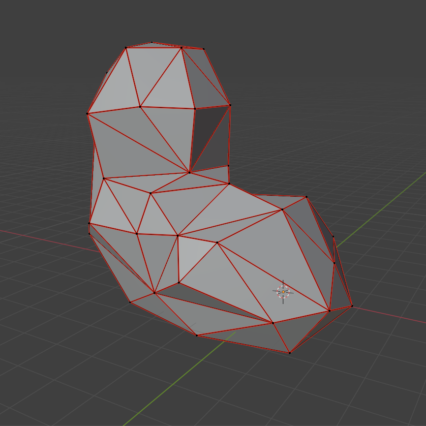
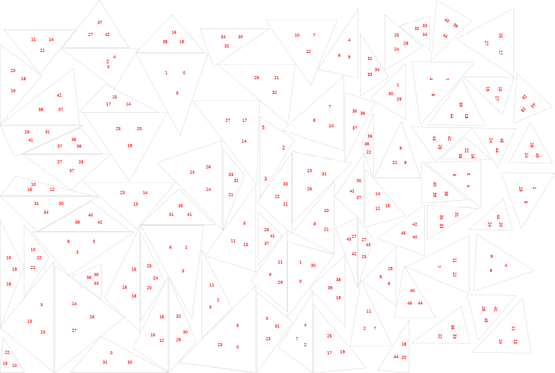
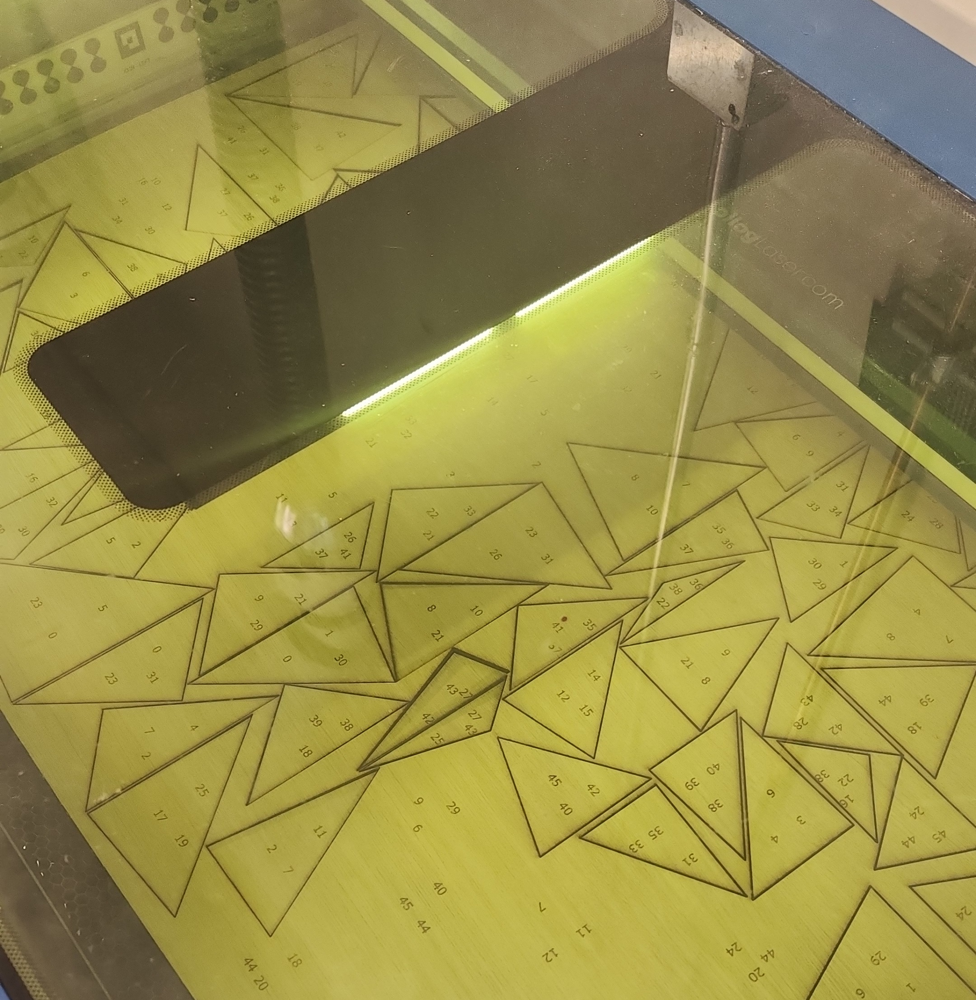
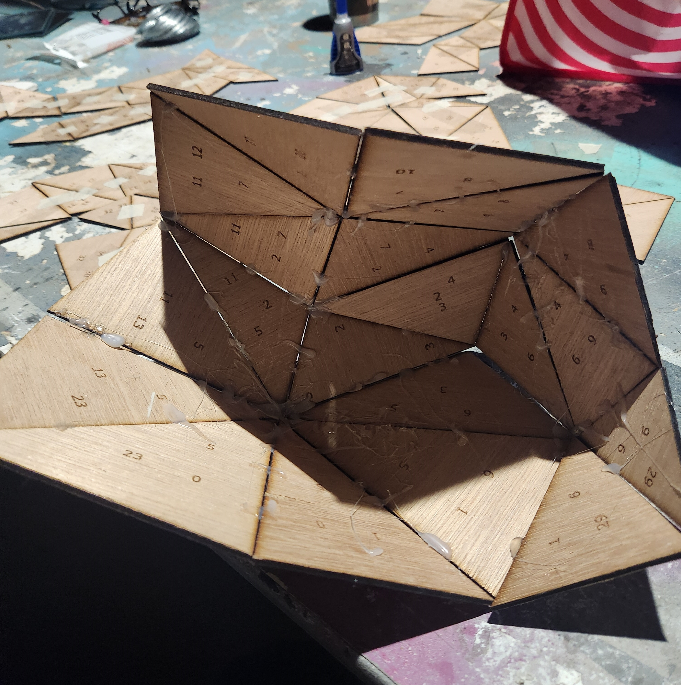
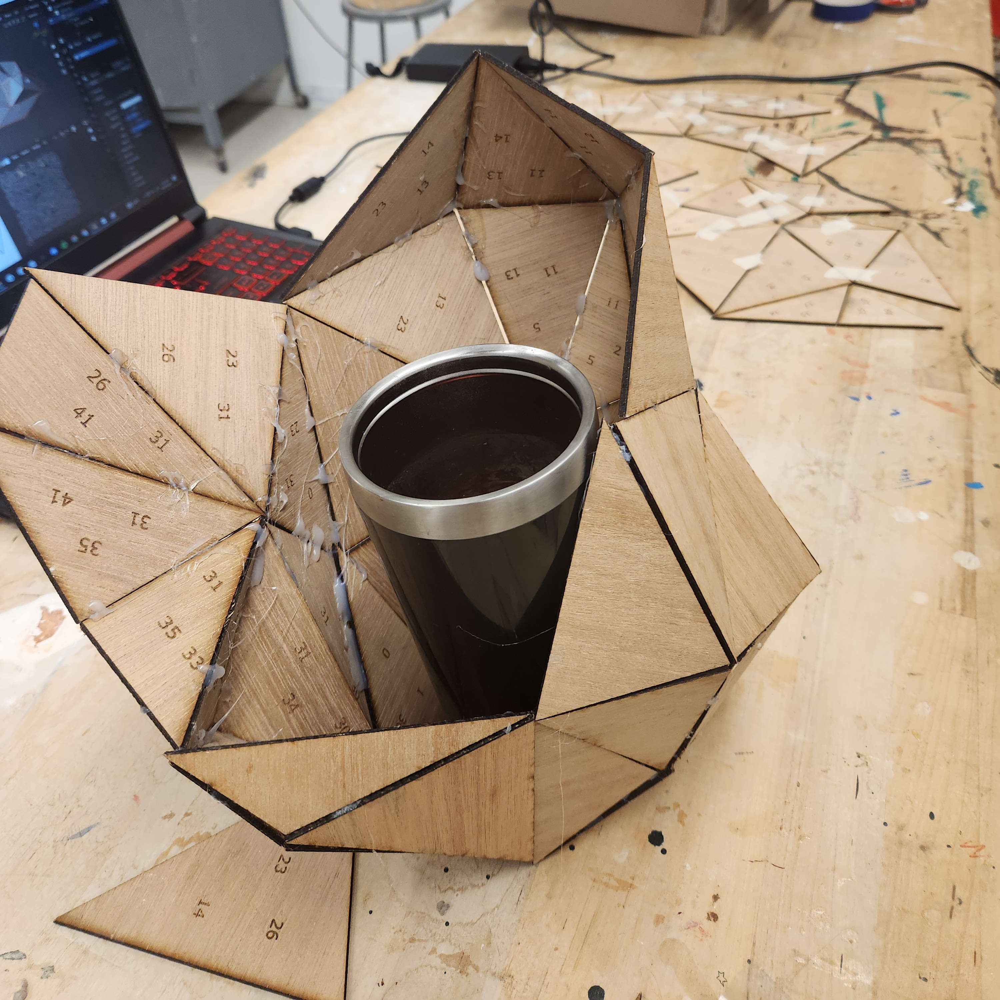
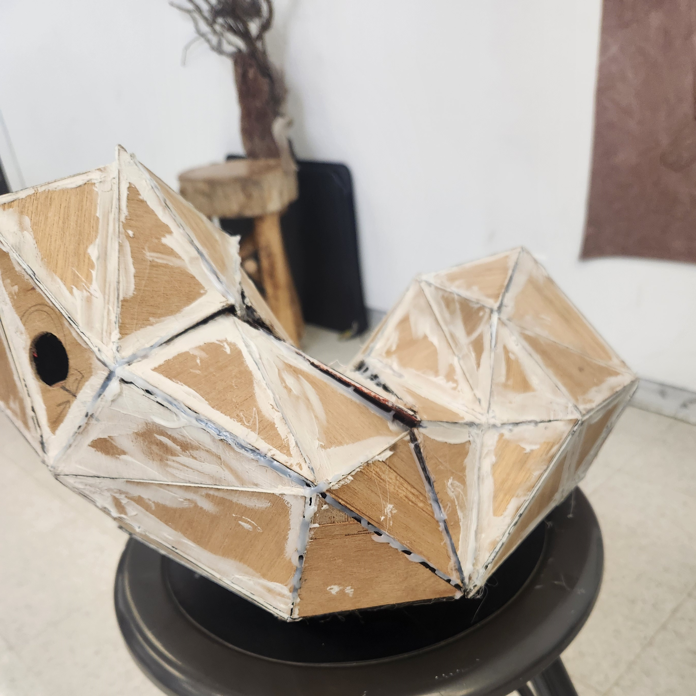

Blender Scripting - SVG File Generation
Nov 2024
Python Blender API, Processing 4 (java), JSON
I wrote scripts that take data from a 3D model in Blender and generate an SVG image of the model's triangles with numbered vertices. A laser cutter can use the SVG file to cut out and engrave thin triangles that can be assembled into a physical, to-scale sculpture of the original 3D model.
A custom python script in Blender generates and exports a JSON file with data about a 3D model's tightly packed, undistorted UV map. It includes all of the triangles with the positions of their vertices as well as an integer ID for each unique vertex.
Then a Processing 4 (java) script parses the file and generates an SVG image of the triangles in the UV map. It calculates the center of each triangle and uses it to label each vertex with its ID, inside of each triangle.
A laser cutter can be used to cut out the triangles and engrave the text. The model is then assembled by connecting triangles with the same vertex numbers.

(3D model in Blender)

(final SVG image)



(laser cut triangles with numbered vertices)

(assembled frame for sculpture)
Return to Projects